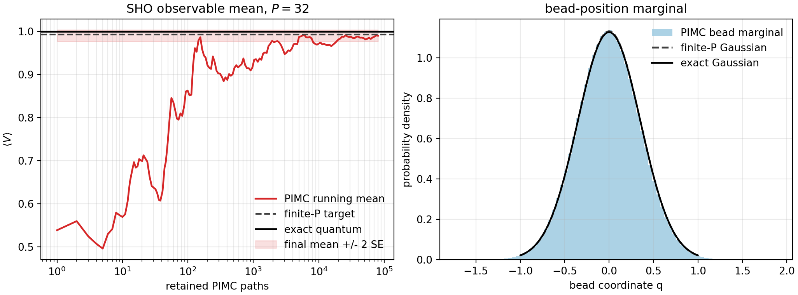

PIMD Series - Part IV
Path-Integral Monte Carlo
The previous notes sampled the ring-polymer distribution by molecular dynamics. Path-integral Monte Carlo targets the same configurational distribution with Metropolis moves instead of fictitious momenta and timesteps. This note writes the local bead update, explains where constrained PIMC enters, and checks an observable mean for a harmonic oscillator.
Target Distribution
After Trotter discretization, the one-dimensional canonical partition function can be written as a configurational path integral
with dimensionless Euclidean action
PIMD samples this distribution by dynamics on an extended Hamiltonian. PIMC samples it directly as a probability density proportional to \(e^{-S_P}\). There is no MD stability question, but there is a Monte Carlo mixing question.
Local Metropolis Move
The implementation follows the simple local-action structure used in the source notes and in the toy-model code. During one sweep, every bead is visited once in a random order. If bead \(i\) is proposed to move from \(q_i\) to \(q_i'\), only the two adjacent spring links and the bead potential change:
The move is accepted with
For a position observable \(A(q)\), the estimator is evaluated on retained paths after burn-in:
Constrained PIMC Context
The same sampler can be modified to keep the centroid \(q_c=P^{-1}\sum_j q_j\) fixed. A convenient proposal moves one bead and then shifts the whole path so that the centroid returns to a target value \(x_c\). This is the starting point for centroid effective-potential or CMD-style calculations:
This Part IV keeps the benchmark unconstrained because the goal is to verify the basic equilibrium PIMC sampler first. The constrained formula is included to show how the method extends beyond ordinary thermal sampling.
Workflow
- Use the same harmonic oscillator scale as Part I: \(m=\hbar=1\), \(\beta=2\), \(\omega_0=4\), and \(P=32\).
- Start eight independent chains from \(q_j=0\).
- Run local single-bead Metropolis sweeps with adaptive proposal size during burn-in, targeting an acceptance rate near 0.45.
- After burn-in, retain every fifth path and evaluate the bead-average potential \(V_P(q)=P^{-1}\sum_j m\omega_0^2q_j^2/2\).
- Compare the Monte Carlo mean with both the exact finite-\(P\) harmonic value and the infinite-\(P\) quantum value.
Result
For \(P=32\), the run gives \(\langle V\rangle_{\mathrm{PIMC}}=0.99021\pm0.00684\). The exact finite-\(P\) target is \(0.99296\), while the infinite-\(P\) quantum value is \(1.00067\). Within the Monte Carlo uncertainty, the sampler is targeting the finite-bead ring-polymer distribution as intended.

Interpretation
PIMC and PIMD share the same finite-\(P\) configurational target. PIMD adds fictitious momenta and then worries about thermostats, normal-mode stiffness, and free-step stability. PIMC removes the timestep issue and replaces it with proposal design, burn-in, acceptance-rate control, and correlation between retained paths. For a harmonic oscillator, the finite-\(P\) target is known analytically, so it is a clean test that the Metropolis action and observable estimator are implemented correctly.
Code used in this note
- pimc_sho_metropolis.py implements the local-action Metropolis sampler, runs the SHO benchmark, writes the figure, and saves summary tables.
- pimc-sho-summary.csv stores the PIMC mean, finite-\(P\) target, exact quantum value, \(\langle q^2\rangle\), acceptance rate, and final proposal size.
- pimc-sho-running.csv stores the running \(\langle V\rangle\) curve used in the left panel.
References
- Feynman and Hibbs, Quantum Mechanics and Path Integrals.
- Ceperley, Rev. Mod. Phys. 67, 279 (1995).
- Tuckerman, Statistical Mechanics: Theory and Molecular Simulation.